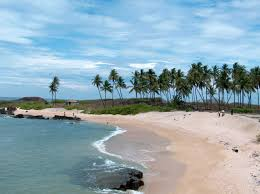

Tourist Guide
Manglore Beach

Mangalore is one of the prominent cities in South Canara, Karnataka. Situated in Dakshina Kannada, it is 352 km from Bangalore to Mangalore. There are a number of places to visit in Mangalore and among them beaches are the main tourist attractions. Ranked as the 8th cleanest city of India, it has some clean and scenic beaches. A visit to these pristine beaches in Mangalore is enriching for sure.
Panambur Beach is situated at a distance of 2 km from the New Mangalore Port. It is one of the famous beaches in Mangalore.
Tannirbhavi Beach is a calm and secluded one in Mangalore. It is not crowded like Panambur beach as it is little far from the city. It is one of the clean and less crowded beaches in Mangalore. Thus, making it an ideal weekend getaway from Mangalore.